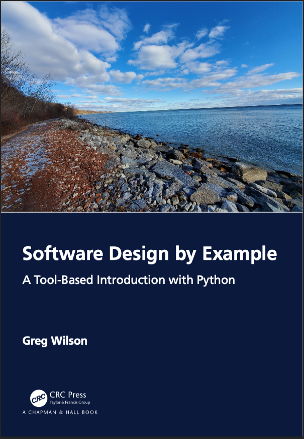

Software Design by Example
A tool-based introduction with Python

The best way to learn design in any field is to study examples,
and the most approachable examples are ones that readers are already familiar with.
These lessons therefore build small versions
of tools that programmers use every day
to show how experienced software designers think.
Along the way,
they introduce some fundamental ideas in computer science
that many self-taught programmers haven't encountered.
We hope these lessons will help you design better software yourself,
and that if you know how programming tools work,
you'll be more likely to use them
and better able to use them well.
Chapters
- Introduction
- Objects and Classes
- Finding Duplicate Files
- Matching Patterns
- Parsing Text
- Running Tests
- An Interpreter
- Functions and Closures
- Protocols
- A File Archiver
- An HTML Validator
- A Template Expander
- A Code Linter
- Page Layout
- Performance Profiling
- Object Persistence
- Binary Data
- A Database
- A Build Manager
- A Package Manager
- Transferring Files
- Serving Web Pages
- A File Viewer
- Undo and Redo
- A Virtual Machine
- A Debugger
- Observers
- Generating Documentation
- A File Cache
- Concurrency
- Conclusion
In Detail
- Chapter 1: Introduction
- The best way to learn design is to study examples, and the best programs to use as examples are the ones programmers use every day. These lessons therefore build small versions of tools that programmers use every day to show how experienced software designers think. Along the way, they introduce some fundamental ideas in computer science that many self-taught programmers haven't encountered. The lessons assume readers can write small programs and want to write larger ones, or are looking for material to use in software design classes that they teach.
- Chapter 2: Objects and Classes
- Object-oriented programming was invented to solve two problems: what is a natural way to represent real-world "things" in code, and how can we organize that code so that it's easiser to understand, test, and extend? This chapter shows how object-oriented systems solve those problems by implementing a very simple object system using simpler data structures.
- Chapter 3: Finding Duplicate Files
- The naïve way to find duplicated files is to compare each file to all the others, but that is unworkably slow for large sets of files. A better approach is to generate a short label that depends only on the file's contents so that we only need to compare files with the same label. This idea is the basis of many real-world applications, including the cryptographic systems used for secure online communication.
- Chapter 4: Matching Patterns
- Pattern matching is ubiquitous in computer programs. Whether we are selecting a set of files to open or finding names and email addresses inside those files, we need an efficient way to find matches for complex patterns. This chapter therefore implements the filename matching used in the Unix shell to show how more complicated tools like regular expressions works.
- Chapter 5: Parsing Text
- A parser turns text that's easy for a human being to read into a data structure that a computer can work with. The complete parser for a language like Python can be very complex, but this chapter illustrates the key ideas by building a parser for the simple filename matching patterns implemented in the previous chapter.
- Chapter 6: Running Tests
- Every programming language has tools to collect tests, run them, and report their results. This chapter shows how such tools are built, both to help programmers use them more effectively, and to illustrate the single most important idea in this book: that programs are just another kind of data.
- Chapter 7: An Interpreter
- A program in memory is just a data structure, each of whose elements triggers some operation in the interpreter that's executing it. This chapter builds a very simple interpreter to show how this process works, and to show that we can evaluate the quality of a program's design by asking how extensible it is.
- Chapter 8: Functions and Closures
- This chapter extends the little interpreter of the previous one to allow users to define functions of their own. By doing so, it shows that the way programs handle variable scope is a design choice, and that the use of a particular technique called closures enables programs written in Python (and other modern programming languages) to encapsulate information in useful ways.
- Chapter 9: Protocols
- This chapter starts by showing how we can simplify testing by temporarily replacing real functions with ones that return predictable values, then uses our need to do that to motivate discussion of ways that programmers can hook their own code into the Python interpreter. Unlike other chapters in this book, this one focuses on Python itself rather than the things we can build with it.
- Chapter 10: A File Archiver
- Most programmers would agree that once they have a text editor and a way to run their programs, the next tool they need is version control. This chapter therefore shows how the core of a simple version control system works by building a file archiver that avoids creating duplicate copies of the same files.
- Chapter 11: An HTML Validator
- This chapter builds a tool to check the structure of web pages in order to show how programs can process HTML, and to introduce a design pattern that is frequently used to manage irregular data structures.
- Chapter 12: A Template Expander
- Writing and updating HTML pages by hand is time-consuming and error-prone, so most modern websites use some kind of static site generator (SSG) to create pages from templates. This chapter builds a simple SSG to show how they work and to reinforce earlier lessons about creating little programming languages.
- Chapter 13: A Code Linter
- This chapter brings together pieces from the preceding few lessons to show how one program can check the structure of another. Tools that do this, called linters, rely once again on the fact that programs are just another kind of data.
- Chapter 14: Page Layout
- Browsers, e-book readers, and text editors all rely on some kind of layout engine that takes text and formatting instructions as input and decides where to put each character and image. To explore how they work, this chapter builds a small HTML layout engine, and in doing so, introduces some useful ideas about recursion and multiple inheritance.
- Chapter 15: Performance Profiling
- This chapter implements the kind of multi-column table frequently used in data science in two different ways in order to reinforce earlier ideas about the value of abstraction and to show how systematic performance testing can be used to decide between different implementation strategies.
- Chapter 16: Object Persistence
- Some simple kinds of data can be saved as lines of text, but more complex data structures require a framework capable of handling aliasing and circularity. This chapter shows how to build such a framework, and in doing so demonstrates how libraries for handling JSON and other formats work.
- Chapter 17: Binary Data
- Python and other high-level languages shield programmers from the low-level details of how computers actually store and manipulate data, but sooner or later someone has to worry about bits and bytes. This chapter explores how computers represent numbers and text and shows how to work with data at this level.
- Chapter 18: A Database
- Almost every real-world application relies on some kind of database that allows code to look up data without loading everything into memory. To show how they work, this chapter builds a very simple database that appends every new copy of a record to a running log of operations.
- Chapter 19: A Build Manager
- Programmers frequently need to chain operations together so that if one file is updated, everything that depends on it is also updated, and then things that depend on them are updated as well. This chapter builds a simple build manager to show how such tools work, and to introduce some fundamental algorithms on directed graphs.
- Chapter 20: A Package Manager
- Most languages have an online archive from which people can download packages, each of which has a name, one or more versions, and a list of dependencies. In order to install a package, we need to figure out exactly what versions of its dependencies to install; this chapter explores how to find a workable installation or prove that there isn't one.
- Chapter 21: Transferring Files
- A typical web application is made up of clients that send messages to servers and then wait for them to respond. This chapter shows how they work at a low level by building a simple low-level client-server program to move files from one machine to another.
- Chapter 22: Serving Web Pages
- The Hypertext Transfer Protocol (HTTP) defines a way for programs to exchange data over the web. Clients (such as browsers) send requests to servers, which respond by copying files from disk, pulling records from a database, or in any of dozens of other ways. This chapter shows how to build a simple web server that understands the basics of HTTP and how to test programs of this kind.
- Chapter 23: A File Viewer
- Even simple editors like Notepad and Nano do a lot of things: moving a cursor, inserting and deleting characters, and more. This is too much to fit into one lesson, so this chapter builds a tool for viewing files, which the next chapters extends to create an editor with undo and redo.
- Chapter 24: Undo and Redo
- Viewing text files is useful, but we'd like to be able to edit them as well. This chapter therefore modifies the file viewer of the preceding chapter so that we can add and delete text. And since people make mistakes, it also implements undo, which introduces another commonly-used design pattern.
- Chapter 25: A Virtual Machine
- The standard version of Python is implemented in C, but C is compiled to instructions for a particular processor. To show how that lower layer works, this chapter builds a simulator of a small computer and an assembler for a very simple language that can be used to program it.
- Chapter 26: A Debugger
- Debuggers are as much a part of good programmers' working lives as version control but are taught far less often. This chapter therefore builds a simple single-stepping debugger for the virtual machine of the previous chapter and shows how we can test it and other interactive applications.
- Chapter 27: Conclusion
- We have long accepted that software can and should be critiqued by asking if it does what it's supposed to do and if it's pleasurable to use. What is often missing is the question of whether its design facilitated its manufacture and maintenance. We hope that this book has helped you move one step closer to being able to ask and answer that question about the things you build.
Dedication
This one's for Mike and Jon: I'm glad you always found time to chat.
Acknowledgments
All of thi material is available under an open license, and contributions through our repository are welcome. All participants are required to respect our Code of Conduct.
Greg Wilson is a programmer, author, and educator based in Toronto, Canada. He was the co-founder and first Executive Director of Software Carpentry and received ACM SIGSOFT's Influential Educator Award in 2020.
start where you are · use what you have · help who you can